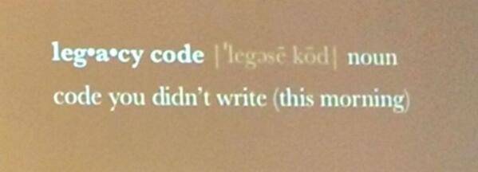
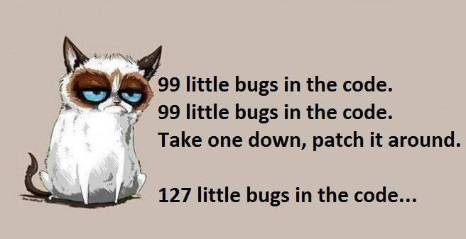
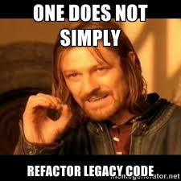
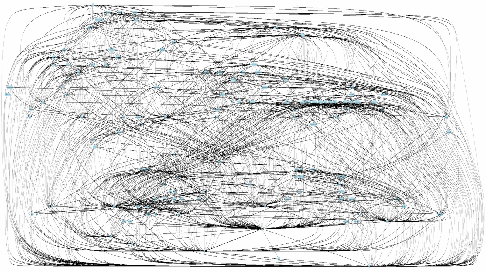

include FooCafe
author = Presenter.new(:buren)
slides = MigratingLegacy::Slides.new
wait until author.ready?
author.present(slides) do |slide|
print slide
any_questions? if slide.last?
end
Goto: http://jacobburenstam.com/migrating-legacy

GOTO
jacobburenstam.com/migrating-legacy
Who wants pizza?
Who here have worked with a legacy code base?
Where did/do you have the most "legacy"?
How do you battle legacy?
Agenda
- Talk.......

- Please interupt me!
- Code

Disclaimer
- My on personal opinions, not the opinions of my employer.
- Your mileage may vary (a lot)
Jacob Burenstam
- Open source tinkerer
- Useless code enthusiast
- Work @ Trialbee
Legacy code


Definition?
Legacy code has many definitions:
- Code for
{outdated|obsolete}systems that is kept for{compatibility|legal|SLA}reasons - Code written by another person who don't maintain it anymore
- Code without test (Micheal Feathers)
Legacy code in images





Keep it simple stupid!
Legacy code..
"... A large part of the task of a software engineer is to continually alter code to prevent this."
- Wikipedia
Many ways to battle legacy code
- There is no silver bullet
- Be pragmatic, very pragmatic
Michael Feathers on improving legacy code
- Identify change points
- Find an inflection point (a small interface)
- Cover the inflection point
- Break external dependencies
- Break internal dependencies
- Write tests
- Make changes
- Refactor the covered code.
Inspiration
"The functional core and the imperative shell"
- Gary Bernhardt
Remember the code from the first slide?
include FooCafe
author = Presenter.new(:buren)
slides = MigratingLegacy::Slides.new
wait until author.ready?
author.present(slides) do |slide|
print slide
any_questions? if slide.last?
end
DEADLINE = Time.new(2015, 10, 14, 18, 0, 0).freeze
module FooCafe;end
module FooCafe::MigratingLegacy;end
String.class_eval { define_method(:last?) { false } }
NilClass.class_eval { define_method(:last?) { true } }
define_method(:wait) { puts 'Still not ready..';sleep 3 }
define_method(:any_questions?) { puts 'Any questions?' }
define_method(:feedback) { puts 'Feedback?' }
class FooCafe::Presenter < Struct.new(:name)
define_method(:ready?) { Time.now >= DEADLINE }
def present(slides); slides.to_a.each { |slide| yield(slide) };end
end
class FooCafe::MigratingLegacy::Slides
define_method(:initialize) { @slides = File.read('slides.md').split('---') }
define_method(:to_a) { @slides + [nil] }
end
This actually makes the previous code work 

Slides available on
https://github.com/buren/migrating-legacy
Questions?
github.com/buren
keybase.io/buren

Build your own ingrations?
Use some existing library?
React backend integrations
Lets look at some code